Last published: 25 December 2005
|
Doc for 2.3
genesis
|
genesis-server
|
genesis-client
|
genesis-shared
|
genesis-aspect
|
genesis-xdoclet
genesis
Overview
Screenshots
Downloads
Release notes
Documentation
User manual
Understanding genesis jars
Developing with genesis
Developing with genesis (WEB)
Using the UserAdmin sample
Advanced guide
FAQ
Roadmap
Wiki
Project Documentation
About
Project Info
Project Reports
Development Process
java.net
genesis.dev.java.net
Legend
External Link
Opens in a new window
genesis Screenshots - Assembling an application
1. Solution's architecture
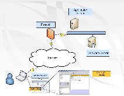
2. Application's architecture
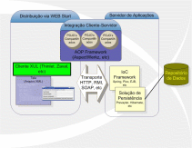
Demo application: SimpleCalc - client module
1. Simple Calculator Screen
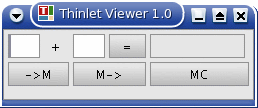
2. Screen's XML
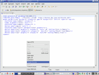
3. Main - Simple Calculator
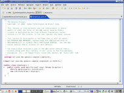
4. View
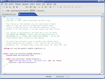
5. Form - Part 1
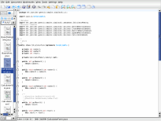
6. Form - Part 2
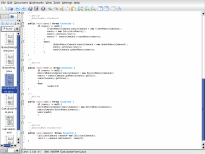
Demo application: SimpleCalc - shared module
7. Databean - CalculatorMemory
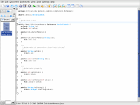
8. Business Command - Create Memory Command
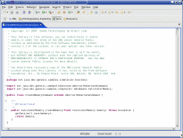
9. Business Command - Retrieve Memory Command
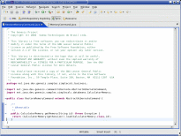
10. Business Command - Update Memory Command
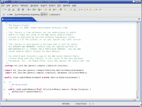`
11. Business Command - Delete Memory Command
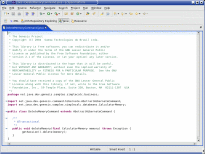


{kind=link}
{kind=link}
{kind=link}
{kind=link}
{kind=link}
{kind=link}
{kind=link}
{kind=link}
{kind=link}
{kind=link}
{kind=link}
{kind=link}
{kind=link}